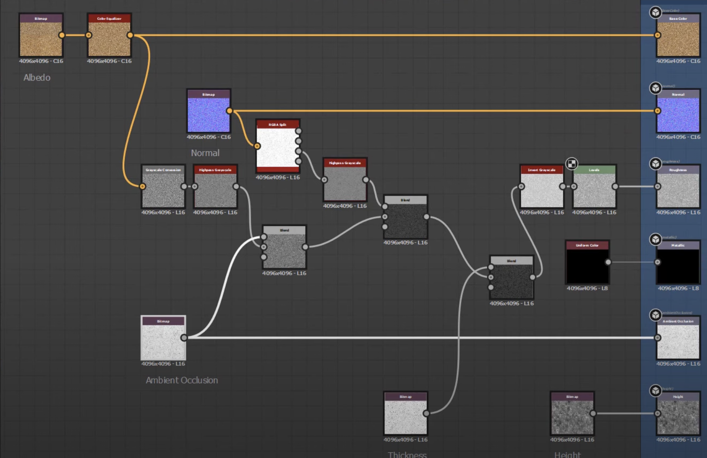
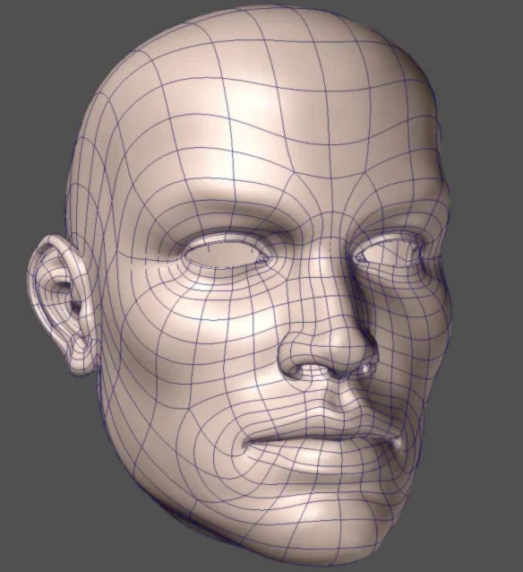

Game-ready 3D Generative AI
Mark Boss is a researcher at Stability AI. He worked at Unity Technologies before and completed his PhD at the University of Tübingen in the computer graphics group of Prof. Hendrik Lensch. His research interests lie at the intersection of machine learning and computer graphics, focusing mainly on inferring physical properties (shape, material, illumination) from images.
Research Scientist
Stability AI
January 2024 - present
Senior Research Scientist
Unity
September 2022 - January 2024
Student Researcher
June 2021 - April 2022
Research Intern
Nvidia
April 2019 - Juli 2019
Ph.D. Student
University of Tübingen
June 2018 - Juli 2022
[1] Result from: Boss et al. - SF3D: Stable Fast 3D Mesh Reconstruction with UV-unwrapping and Illumination Disentanglement - 2024

Delighting [1]
Material Creation in Substance Designer [2]
Quad Topology [3]
[1] Create Photorealistic Game Assets - E-Book - Unity Technologies - 2017
[2] Photogrammetry workflow for surface scanning with the monopod - Grzegorz Baran - 2020
[1] Blattmann et al. - Stable Video Diffusion: Scaling Latent Video Diffusion Models to Large Datasets - 2023


| Method | LPIPS | PSNR | SSIM | CLIP-S |
|---|---|---|---|---|
| EscherNet [1] | 0.178 | 14.438 | 0.804 | 0.835 |
| Free3D [2] | 0.197 | 14.202 | 0.799 | 0.809 |
| Stable Zero123 [3] | 0.166 | 14.635 | 0.813 | 0.805 |
| SV3D | 0.119 | 17.405 | 0.849 | 0.877 |
[1] Kong et al. - Eschernet:A Generative Model for Scalable View Synthesis - 2024
[2] Zheng et al. - Free3D: Consistent Novel View Synthesis without 3D Representation - 2023
[3] Stability AI - Stable Zero123 - 2023
[1] Hong et al. - LRM: Large Reconstruction Model for Single Image to 3D - 2023
[2] Tochilkin et al. - TripoSR: Fast 3D Object Reconstruction from a Single Image - 2024
[1] Tochilkin et al. - TripoSR: Fast 3D Object Reconstruction from a Single Image - 2024
[2] Wang et al. - CRM: Single Image to 3D Textured Mesh with Convolutional Reconstruction Model - 2024
[3] Xu et al. - InstantMesh: Efficient 3D Mesh Generation from a Single Image with Sparse-view Large Reconstruction Models - 2024
[1] Tochilkin et al. - TripoSR: Fast 3D Object Reconstruction from a Single Image - 2024
[2] Wang et al. - CRM: Single Image to 3D Textured Mesh with Convolutional Reconstruction Model - 2024
[3] Xu et al. - InstantMesh: Efficient 3D Mesh Generation from a Single Image with Sparse-view Large Reconstruction Models - 2024
| Method | CD | F-Score @ 0.1 | F-Score @ 0.2 | F-Score @ 0.5 | Time [s] |
|---|---|---|---|---|---|
| ZeroShape [1] | 0.160 | 0.489 | 0.759 | 0.952 | 0.9 |
| OpenLRM [2] | 0.160 | 0.472 | 0.751 | 0.954 | 2.0 |
| TripoSR [3] | 0.111 | 0.645 | 0.860 | 0.980 | 0.3 |
| LGM [4] | 0.195 | 0.376 | 0.654 | 0.928 | 64.6 |
| CRM [5] | 0.179 | 0.411 | 0.699 | 0.945 | 10.2 |
| InstantMesh [6] | 0.138 | 0.549 | 0.801 | 0.967 | 32.4 |
| SF3D (Ours) | 0.098 | 0.701 | 0.894 | 0.988 | 0.5 |
[1] Huang et al. - ZeroShape: Regression-based Zero-shot Shape Reconstruction - 2023
[2] He et al. - OpenLRM: Open-source Large Reconstruction Models - 2023
[3] Tochilkin et al. - TripoSR: Fast 3D Object Reconstruction from a Single Image - 2024
[4] Tang et al. - LGM: Large Multi-view Gaussian Model for High-resolution 3D Content Creation - 2024
[5] Wang et al. - CRM: Single Image to 3D Textured Mesh with Convolutional Reconstruction Model - 2024
[6] Xu et al. - InstantMesh: Efficient 3D Mesh Generation from a Single Image with Sparse-view Large Reconstruction Models - 2024